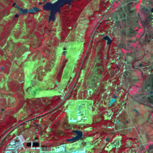

学习：怎么判读
大约 30 分钟。先看 1—3 节，再到第 4 节跟着做一遍练习。图鉴和常见问题随时可以回来查。
1认识卫星图
每一张图都是同一块地方，大小是 2.56 公里 × 2.56 公里。图上的每一个小方格代表地面上 10 米 × 10 米，一栋普通房子差不多就是一两个方格。放大以后你会看到一个个方格，这是正常的，放大只是看得更仔细，不会变得更清楚。


判读页上还有两条辅助线：黄色虚线圈出的是要看的范围（株洲南、韶关南只看铁路右侧的山，衡阳北看整幅）；橙色虚线是铁路的大致位置。两条线都可以在工具栏上关掉。
每一期都要和“上一期”比。上一期就是时间上紧挨着的前一张，页面会自动显示日期和隔了几天，不用自己找。
2什么叫看不清
第一步只看这一期本身。云、雾、阴影、黑块都可能影响观察，但影响程度不一样。看观察范围里的地面，从四档里选最符合的一项：
- 清楚：地面看得清清楚楚。
- 整体模糊，但还能看：整幅发灰、发雾或偏暗，但地物还认得出来。选一下原因，照常和上一期比较。
- 有些地方看不清：局部被云、云影、黑块挡住。选原因，再画框把看不清的地方圈出来，其余地方照常比较；如果其余部分也发灰，勾上“其余地方也有点模糊”。
- 基本看不清：整幅被云雾盖住，看不出地面。选原因，这一期就不用比较了。
原因可以多选；列表里没有的，写在“其他原因”里。
下面的图鉴里有本站真实的例子，建议每一张都看一遍。
3什么叫明显不同
第二步左右对比：左边上一期，右边这一期。两边会一起放大、一起移动，同一个位置永远对齐。
- 只在两期都看得清的地方比。上一期那里被云挡住，这一期看见了一片裸土，并不能说明是新出现的；这种情况画框，选“有差别，但说不清是什么”，再写一句“上一期那里有云”。
- 看得出不同就画框。框要贴着变化的那一部分，比如一块新裸土、一条新路、一片新屋顶；原来就有的东西不要框进去。
- 每个框都要选是什么变化，可以多选。拿不准就选“有差别，但说不清是什么”，在框下面写一句你看到的样子。
- 季节变化也要记，比如庄稼返青、收割、翻地、树叶变黄。选“植被 增加 / 减少”即可，不用判断是不是施工。
- 整体的差别在“不同点”里勾选，不用画框：整体颜色或亮度变了、清晰程度不一样、整体错位重影、云或云影的位置不同、山的阴影不一样、植被整体变绿或变黄、水的颜色变了。
- 地面某个地方变了，就画框（画框后会自动勾上“地面有局部变化”）。
- 仔细看过、确实没有不同，就选“没有明显不同”。
我们现在只记录“看到了什么不同”，不用判断是不是灾害、有没有风险。看不清就说看不清，拿不准就说拿不准，这比猜一个答案有用得多。
4跟着做一遍
点下面的按钮进入练习。练习用的是衡阳北 2023 年 9 月的真实影像，练习里的记录只存在你自己的浏览器里，不会算进正式结果，可以放心乱点。
- 先看右上角：测点、第几期、日期、距上一期几天。
- 在影像上滚动鼠标滚轮放大，按住鼠标拖动，双击回到整幅。
- 第一步：这一期整体有点发灰（薄雾），但地面能认出来，选“整体模糊，但还能看”，原因选“雾 / 霾”，点“下一步”。
- 第二步：左右对比，找到西侧山坡上新出现的一大片橙红色裸土。
- 点“开始画框”，在图上按住鼠标拖出一个框，把新裸土框住。框可以拖动，拉四个角可以改大小。
- 在右边给这个框选“裸土 / 施工 增加”，也可以再选“植被 减少”。
- 这一期比上一期发灰，在“不同点”里再勾上“清晰程度不一样”。
- 再把整幅看一遍，别的地方有不同就继续画框；没有了就点“保存，进入下一期”。
- 下一期（2023 年 10 月 11 日）有很多云，试试第一步选“有些地方看不清”，把云和云影框出来。